Tan Carlson · Software Engineer · Game projects
My final-year project at UTAR (2022): an online multiplayer arena game for 2–4 players in the browser, built in Unity with Photon PUN 2. The final project was not recovered, so this page shows it through my report's screenshots. The source I kept is an earlier prototype, so in October 2026 I directed Claude Code to make that prototype playable again with the smallest fixes, then upgrade it to Unity 6.3 LTS.
Each player is an armoured 3D character with their own camera. A match lasts 180 seconds. Players fight each other and yellow glowing enemies, which spawn every 3–10 seconds and fire purple bullets. The weapon is a blade you can swing, throw into a wall or the floor, warp to, or use as one end of a laser. Defeating an opponent scores +20, an enemy +5, and being defeated costs 10; a ranking board closes the match.
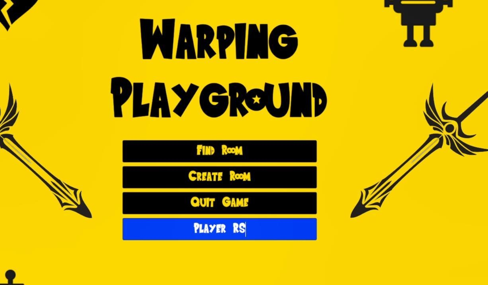
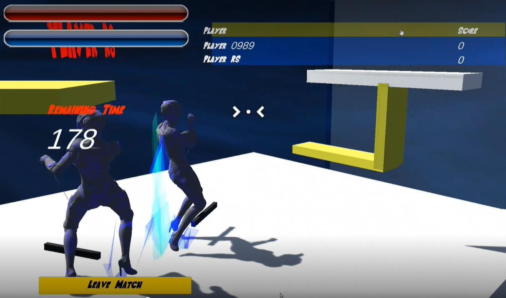
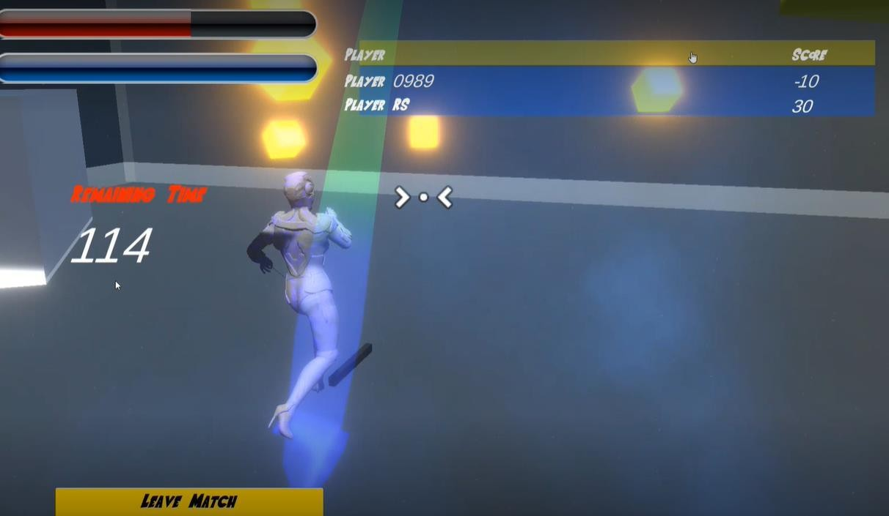
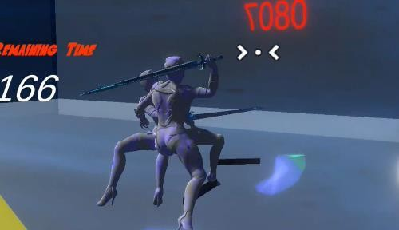
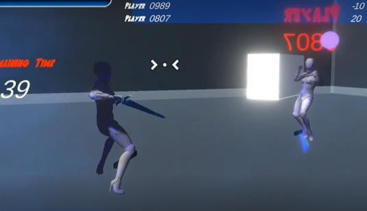
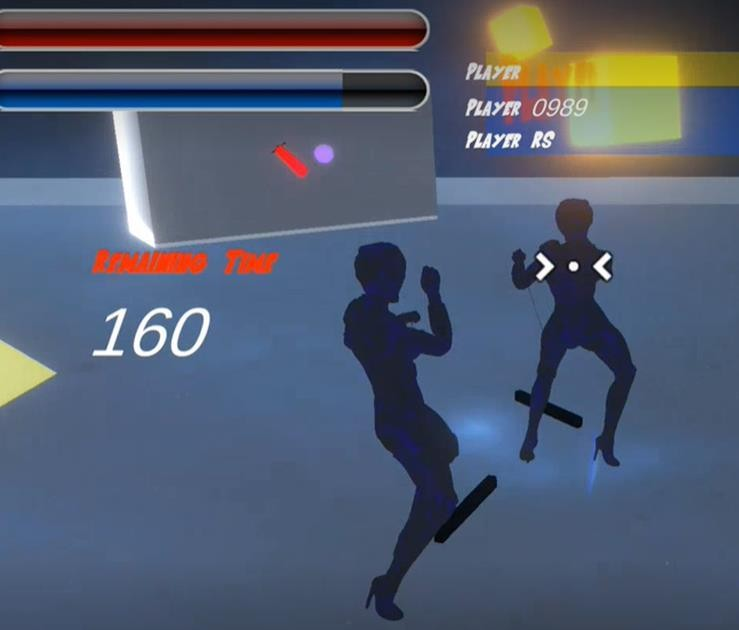
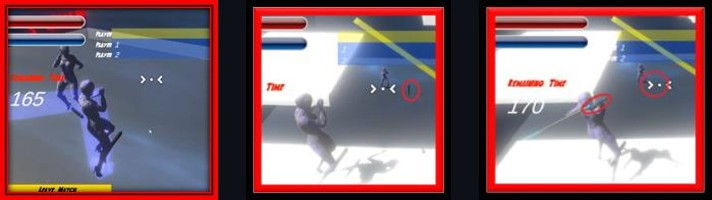
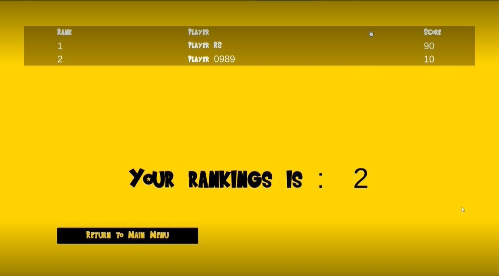
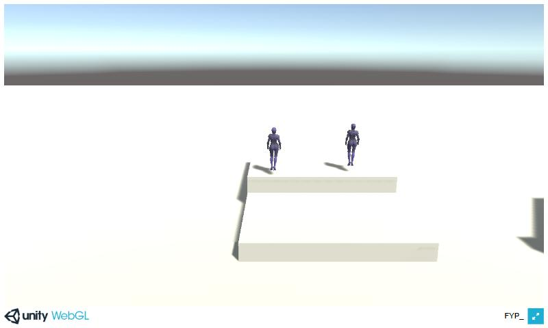
Unity 2020.3 · small fixes, no new features. The 3D character walks, turns and jumps with its own camera; lobby, rooms, networked movement.
Play in browser →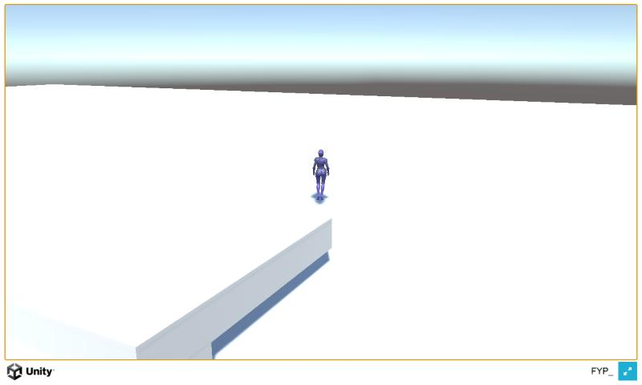
Mouse turning as the report describes, a fixed room list, error screens, unit tests.
Play in browser →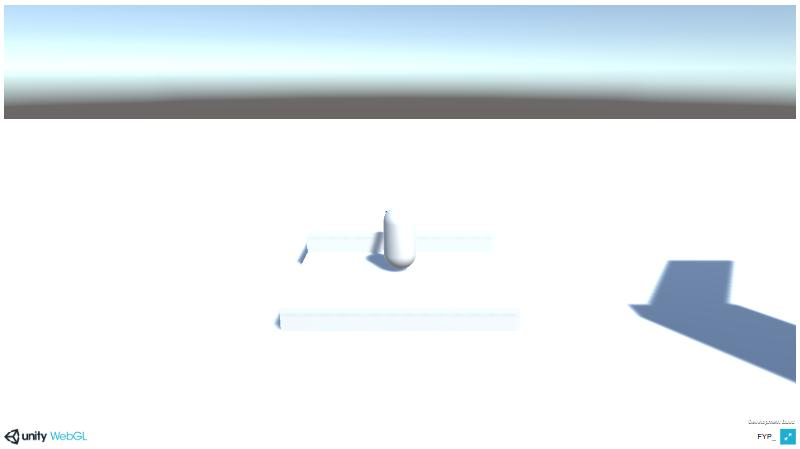
A web build from an earlier snapshot of the prototype, unchanged. Fixed 1920×1024 canvas.
Play in browser →Desktop browser needed. The prototype builds download about 40–57 MB on first load. Multiplayer runs on Photon Cloud's free tier.
| 2022 source, as committed | Restored | Upgraded | |
|---|---|---|---|
| Your character moves? | No: the spawned 3D character had no movement script | Yes: walk, turn, jump | Yes |
| Each player's camera | One fixed view for everyone | Own third-person camera | Own third-person camera |
| Mouse turns the character (report design) | No (no movement at all) | Unchanged | Yes |
| Room list | Rooms could vanish | Unchanged | Full list kept; unit-tested |
| Disconnect or failed join | No message | Unchanged | Error screens (code-reviewed, not play-tested) |
| Automated tests | None | None | 3 EditMode tests |
| Engine | Unity 2020.3.25f1 | Unity 2020.3.49f1 (security patch) | Unity 6.3 LTS |
The final game's combat, enemies and scoring are not in the prototype's source, so neither prototype version has them; the report figures above show them.
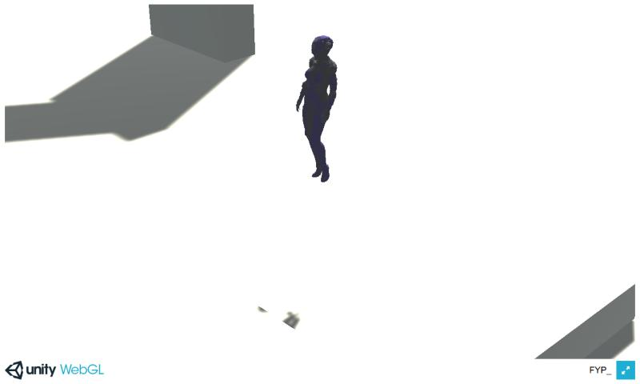
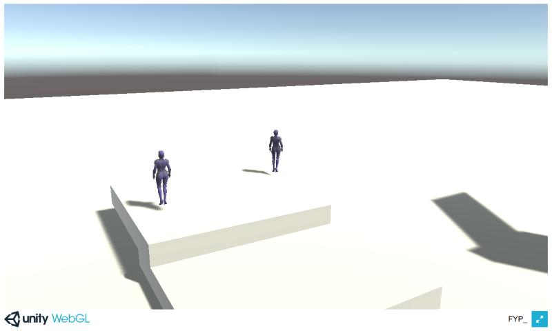
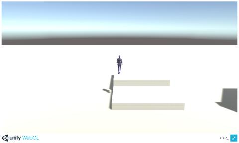
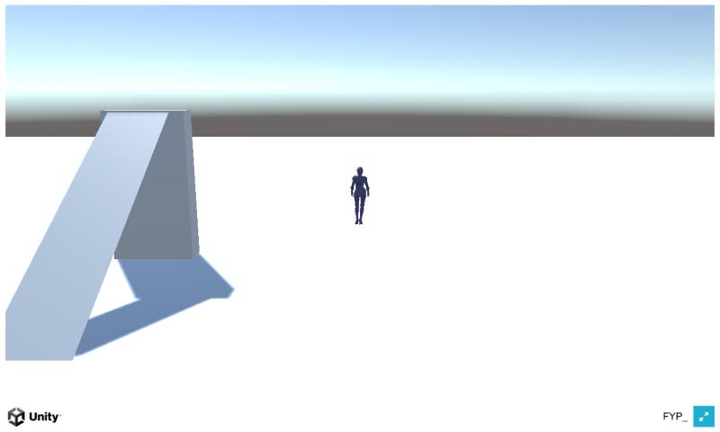
v2022-original, backed up before any upgrade work.restore-2022-playable.ai-upgrade-2026-10, which starts from the restore's first fix, in small labelled commits.See every change: compare the original with the upgrade.
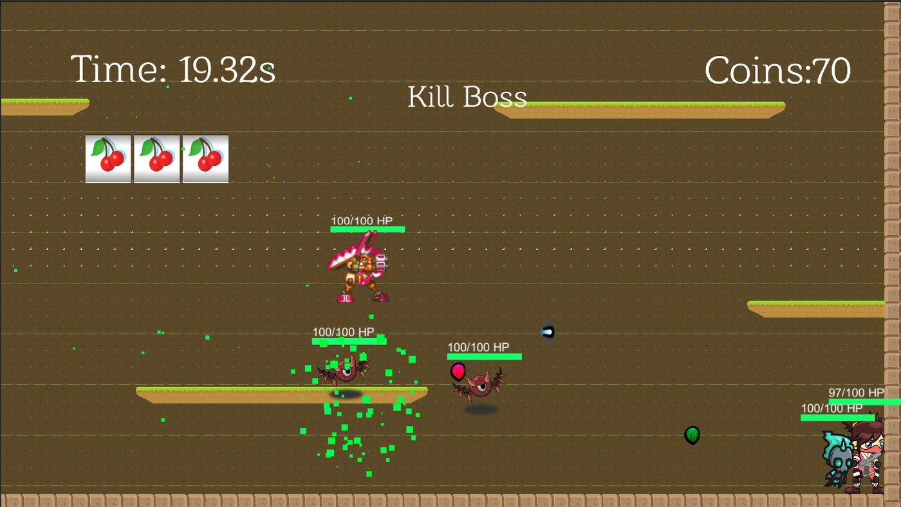
"Coca Cola": a female ninja fights through four levels of moving platforms to a boss that teleports, with a slot machine that heals, buffs or swaps the weapon. As Designer I built the movement and double-jump physics, the slot machine and the audio.
Not playable: the project files are not available, so the page shows screenshots from the group's 2021 report.
See the 2D game →